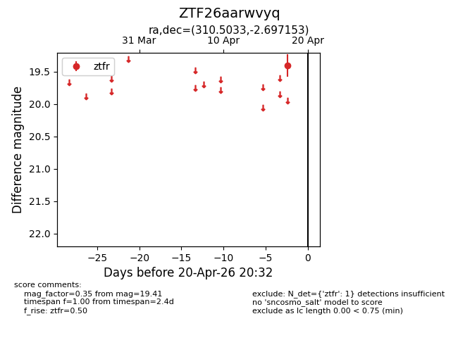
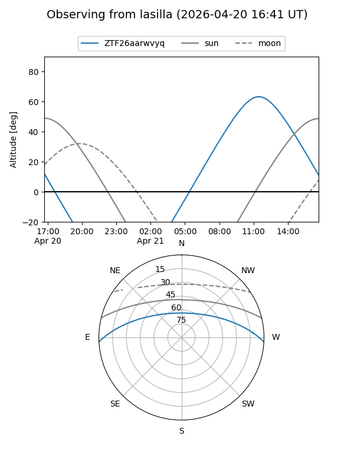
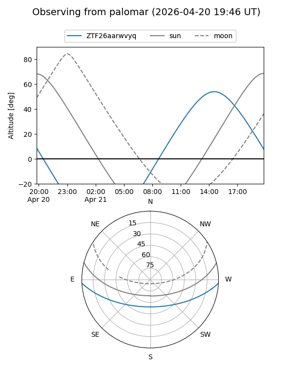

ZTF26aarwvyq
Target ZTF26aarwvyq at 2026-04-20 20:42
Aliases and brokers:
FINK: link
Lasair: link
ALeRCE: link
alt names
ZTF26aarwvyq (ztf,fink_ztf)
Coordinates:
equatorial (ra, dec) = 310.5033,-2.69715
equatorial (HMS+DMS) = 20:42:00.80,-02:41:49.75
galactic (l, b) = (43.7727,-25.71731)
Flags:
Photometry:
last ztfr=19.41
1 ztfr detections
Lightcurve

Visibility


Additional plots